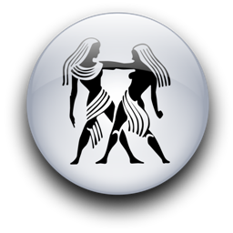

Женщина Рыбы и Мужчина Близнецы
-


Ради спокойствия и безмятежности в их отношениях типичная женщина-Рыбы готова почти на все. Она приспособится, подчинив свой быт удобству любимого мужчины, даже если ее феминистически настроенные подруги будут жалеть ее. Она только улыбнется, не обращая на них никакого внимания.
На самом деле она вовсе не рабыня капризов мужчины-Близнецов, как считают ее сочувствующие знакомые и как иногда думает сам Близнец. Но именно такое впечатление стремится произвести на него (а также на всех своих любознательных друзей, соседей и родственников) эта нежная, уступчивая женщина с негромким голосом. Она знает, что делает. Она упрощает себе жизнь. У нее достаточно здравого смысла, чтобы понять, что в этом рискованном союзе у нее есть практически два пути. Она может решить, что любовь не стоит тех требований, которые мужчина-Близнецы предъявляет к ее утонченной душе - и бросить его. Просто ускользнуть однажды утром, когда его нет рядом. Или она решит, что удовольствие и счастье, удовлетворение и покой, которые она находит в любви к нему, а также любовь и преданность, получаемые взамен, стоят того, чтобы кое в чем найти компромисс.
Пассивное сопротивление - ее нептунианский секрет. У нее к этому врожденный талант - так иным людям от рождения даются музыкальные способности или абсолютный слух. Она знает, когда надо отступить и как далеко отступать, - и чувствует, когда нужно переходить в наступление. Словно при рождении ее снабдили какой-то невидимой, но чувствительной антенной, принимающей подсознательные и в то же время осознанные сигналы.
Все Близнецы, несомненное очень сообразительны, и их почти невозможно провести. Но при всем бесспорном уме мужчины-Близнецов он может оказаться бессилен против нептунианских стратегий женщины-Рыб. Если ей хочется чего-то такого, что он не одобрил бы, она не станет портить их отношения настойчивыми требованиями или слезными просьбами. Она просто будет поступать так, как он хочет, пока он рядом, и как хочет она сама, когда его нет. То, что она сделает без его благословения, - это не обязательно ограбление банка или неверность. Это может быть что-нибудь совершенно невинное или банальное, вроде лишнего часа сна. (Как все птицы, типичный Близнец почти всегда деятелен уже с раннего утра - или весело насвистывая, или ворча (в зависимости от того, который из его близнецов проснулся первым). И он может довольно критично относиться к тем, кто проводит в постели больше времени, чем, по мнению Близнецов, это необходимо, когда есть столько всяких дел.) Это может быть что-то, что она хочет прочесть, - не совсем то, что он мог бы ей рекомендовать. Или, возможно, визит к друзьям, когда он считает, что она могла бы провести время с большей пользой. Это может быть посещение салона красоты. Чем же он недоволен на этот раз? Просто он считает, что она и так хороша, и, кроме того, деньги, потраченные ею на подобную ерунду, могли бы пригодиться им обоим для какой-нибудь совместной поездки (Близнецы обожают смену декораций и готовы отправиться куда угодно, но подальше от обыденной жизни).
Ум Близнецов включает в себя безошибочный инстинкт целесообразности. Он уверен, что время было создано для того, чтобы использовать каждую секунду (за исключением сна - роскоши, которую "птицы Меркурия" позволяют себе ненадолго). И жизнь, и мечты - все это сделано из времени. Растрачивать его, ничего не делая, по его мнению, грешно.
Женщина-Рыбы имеет совершенно другое представление о времени. Она чувствует, что оно неисчерпаемо, и она уверена, что вполне можно проводить время, ничего не делая. Особенно если она истощила свой запас энергии, оказывая тысячу и одну услугу другим. Ей нравится - если есть такая возможность, - просто быть самой собой, просто существовать в прохладных, зеленых нептунианских водах спокойного созерцания. Там она отдыхает душой, а это просто необходимо женщине-Рыбам, связавшей свою судьбу с Близнецом. Те самые качества, которые сначала привлекли ее, впоследствии могут оказаться утомительными для ее более спокойной натуры. У него быстрый, подвижный ум, он схватывает на лету все, что видит, слышит или прочитывает. Идеи возникают у него совершенно неожиданно, и почти всегда они оригинальный восхитительны. Он без конца занят мечтами, мыслями, планами или действиями, в то время как она занята просто существованием. Он может изменить все в одно мгновение, и она никогда не знает, чего ждать за поворотом. Это волнует. Это интригует и захватывает. Он - тайна, а она обожает тайны. Но эти же черты ее любимого, ведомого Меркурием, через некоторое время могут вызвать унес потребность в уединении и тишине... в надежности однообразия... в отступлении к умиротворяющему спокойствию ее собственных, более медленных и мягких мечтаний и стремлений. Наблюдать все это со стороны интересно, даже увлекательно. Но когда она поймет, что становится неотъемлемой частью взлетов и падений его непредсказуемой умственной, физической и эмоциональной деятельности, в ее спокойствии появятся прорехи.
Женщина под управлением Нептуна, как бы она ни сопротивлялась, в конце концов оказывается втянутой в водоворот жизненных перипетий близкого человека. Она впитывает чувства и эмоции окружающих, как психологическая губка или чувствительная фотопластинка (так же как Раки и Скорпионы). И так как она настроена на более мягкую тональность, то ритмы Близнецов могут расшатать ее нервы, нарушить ее равновесие и вызвать в ней некоторую депрессию. В таком случае она принимает решение тихонько уплыть от половодья чувств, грозившего утопить ее... уйти в тихий мир своей внутренней безмятежности... любой ценой... и вернуться, восстановив силы. В периоды этих необходимых отступлений любящий ее мужчина-Близнецы будет чувствовать замешательство и обиду, а иногда и злость.
Ему никогда не приходит в голову, что это напоминает его собственную тактику, ведь он и сам специалист по части ухода в отстраненность в то самое время, когда ей так нужны его внимание и участие. Помните, что Близнецы - это символический Ребенок, а дети всегда несколько эгоистичны. Тем не менее он часто поражает своей проницательностью, несмотря на символическую харизму "детскости". Будут моменты, когда он проявит удивительное понимание, с исключительной нежностью выразит ненавязчивое сочувствие. Он почувствует, когда надо заставить ее рассмеяться, предложить путешествие... или просто совместную прогулку. Это редкие моменты их любви, ее высокие звенящие ноты.
Сексуальная близость между этими мужчиной и женщиной - это не только физическое единение. Каким-то образом, через смешение элементов Воздуха и Воды, в такие моменты он становится похожим на нее, а она - на него. Так что, как ни странно, после их близости она становится более деятельной и оживленной, а он мягким, нежным и не таким беспокойным.
Когда Вода соприкасается с Воздухом в сексуальном Единстве, Вода волшебно преобразует Воздух, и вместе они становятся проводным, дающим жизнь дождем, после которого вся природа напоена обещаниями и благоухает новой надеждой. Их сексуальное таинство может стать мощным источником обновления для обоих, открыть им ту ускользающую гармонию, к которой они столько раз тянулись, но чего, казалось, достичь не могли.
Она медлительна и старается уходить от спорных вопросив, что раздражает его. Но она с такой легкостью переходит на другую тему, что ему при всей его сообразительности остается лишь поспевать за ней. Его приступы критичности, разбросанности и непостоянство интересов огорчают ее; но ей почти всегда удается избежать конфликтной ситуации. Он бы предпочел обратное: ему время от времени спор необходим, чтобы не притупилось его меркурианское остроумие. Она бы хотела расслабиться и не волноваться. Он бы предпочел, чтобы она была собранной и по крайней мере видела вещи такими, какие они есть (хотя его тоже иногда подводит воображение). Мужчина-Близнецы полон неожиданных поворотов. Сложности его мужского сознания всегда будут одновременно притягивать и отпугивать женщину-Рыб. Временами его противоречивость может настолько восхищать ее, что она попробует подражать его аналитическому, но не лишенному воображения образу мыслей. Иногда она будет приходить в отчаяние от того, что не может узнать его по-настоящему. Но и он, правда по другим причинам, будет спрашивать себя, узнает ли ее когда-нибудь до конца. Эта игра никогда не кончится. И Близнецы, и Рыбы - двойственные знаки. Часто мечтательная женщина-Рыбы просто делает вид, что не замечает неприятностей, и тогда (для нее) они исчезают. Она выяснила, что если терпеливо ждать, большинство проблем решится само собой. Но он, столкнувшись с проблемой, должен решить ее немедленно, ведь это все равно что решать кроссворд или вслух отвечать на вопросы телевикторины (которые он отгадывает быстрее того, кому их задают). Каждый Близнец так хочет очистить мутные воды ясностью разума и логики, но (опять загадочное противоречие) его подводит привычка грезить наяву.
Близнецы и Рыбы - знаки Воздуха и Воды - никогда не поведут себя демонстративно, не проявят тепло и симпатию так же открыто, как люди, рожденные, под знаком Огня. Но благодаря сочетанию Воздушной и Водной сущностей, они могут предложить друг другу великий дар - свободу. Она редко требует от него отчета - она не собственница. Он не будет возражать, если она где-то плавает в его отсутствие, но когда он здесь, она должна быть рядом, потому что Близнецам нужна аудитория. Она прекрасная слушательница, и для него это самое ценное ее качество. Он знает, что эта мягкая женщина со своими тонкостями и тихими секретами искренне интересуется всем, что он говорит, - а ему это просто необходимо.
Она знает, что этот непостоянный человек с его вечной сменой настроений всегда будет нуждаться в ней, а это так важно для нее - быть нужной. Он может упрекать ее в чрезмерной щедрости и экстравагантности, но сам способен обегать весь город, занимая деньги, которых у него нет, чтобы вытащить друга из беды. Несколько месяцев он будет строить серьезные планы, решив получить диплом инженера, а затем вдруг купит пишущую машинку и объявит, что собирается стать писателем. Он придет домой, откажется от ужина, сообщит ей, что собирается пораньше лечь, и в раздражении отправится в ванную. Меньше чем через пять минут он появится, улыбнется ей с прежним очарованием и спросит, не хочет ли она поужинать в городе и посмотреть новый спектакль? Пока она переодевается, он будет торопить ее и ворчать, что ей нужна целая вечность, чтобы собраться. Но когда она сядет в машину рядом с ним, он неожиданно скажет, что она красива, как никогда. "Я не знаю, что бы я без тебя делал?" - признается он. Она молча улыбнется: она всегда это знала. Поэтому она все еще здесь.